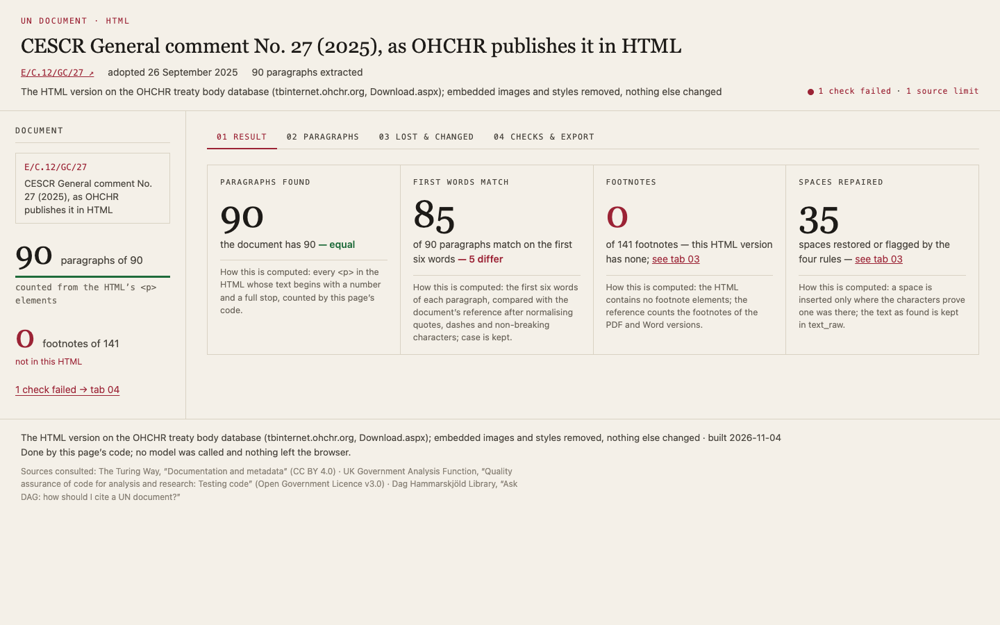

Same prompt, different models
Run 2026-11-04T13-19-25. Country: Kenya. Click a screenshot to open the app.
Mistral Large 4 · France · Mistral (EU)
s7-4-extract

7/7 · 477.5 s · $0.138 · 653 lines
all checks passed